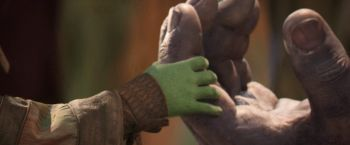
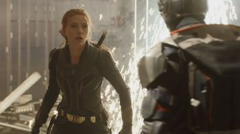
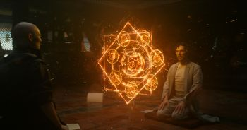
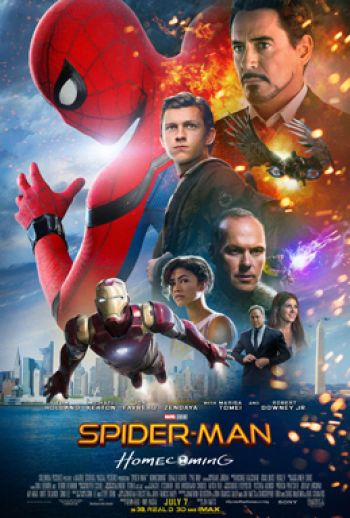
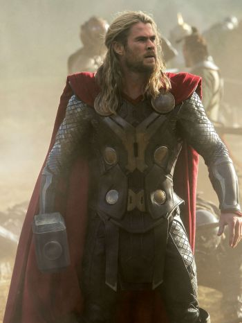
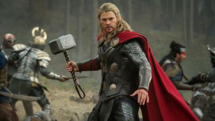

Фильмы о супергероях — жанр кино, посвящённый приключениям супергероев, то есть героев, которые обладают сверхчеловеческими силами (или заменяющей их техникой) и используют их для борьбы со злом. Большинство фильмов о супергероях создано по мотивам супергеройских комиксов.
Фильмы о супергероях почти всегда также относятся к жанрам боевика и кинофантастики. Действие, как правило, происходит в условно современном мире, в котором способности супергероя уникальны и отличают его от простых людей. Первый фильм в серии о супергерое часто рассказывает его историю становления, показывает, как у него появились суперспособности, и первую битву с главным суперзлодеем.
Из всего перечисленного существуют исключения. Так, например, есть фильмы о супергероях, не основанные на комиксах («Хэнкок», «Робокоп», «Суперсемейка» и др.) и нефантастические фильмы о супергероях («Пипец»).
Супергеройские фильмы снимаются, в основном в США, с конца 1930-х. Поначалу они были рассчитаны на детей и подростков, но со временем становились всё более взрослыми и серьёзными. С 2000-х Голливуд переживает бум супергеройского кино, в этом жанре выходит по нескольку фильмов каждый год. Крупнейшие кинопроекты в супергеройском жанре — киновселенная Marvel, киносерии «Люди Икс», «Человек-паук», фильмы о Бэтмене и о Супермене.
«Кинематографическая Вселенная Marvel» (англ. «Marvel Cinematic Universe»; сокр. КВМ) — вымышленная вселенная, серия фильмов о супергероях, основанная на комиксах компании Marvel и разработанная кинокомпанией Marvel Studios. Вселенная была создана путём соединения в общую сюжетную линию нескольких фильмов с актёрами и персонажами. Уже вышло четырнадцать таких фильмов с соединением сюжета, но с разными героями, которые иногда пересекаются между собой: «Железный человек» (2008), «Невероятный Халк» (2008), «Железный человек 2» (2010), «Тор» (2011), «Первый мститель» (2011), «Мстители» (2012), «Железный человек 3» (2013), «Тор 2: Царство тьмы» (2013), «Первый мститель: Другая война» (2014), «Стражи Галактики» (2014), «Мстители: Эра Альтрона» (2015), «Человек-муравей» (2015), «Первый мститель: Противостояние» (2016) и «Доктор Стрэндж» (2016). Премьеры картин «Стражи Галактики. Часть 2», «Человек-паук: Возвращение домой» и «Тор 3. Рагнарёк» состоятся соответственно 4 мая, 6 июля и 2 ноября 2017 года. Телесериалы «Агенты Щ.И.Т.» (2013—наст. время), «Агент Картер» (2015—2016), «Сорвиголова» (2015—наст. время), «Джессика Джонс» (2015—наст. время), «Люк Кейдж» (2016—наст. время), «Железный кулак» (2017—наст. время) и серия короткометражных фильмов «Marvel One-Shots» также входят в состав этой вселенной.
Кинематографическая вселенная Marvel занимает первое место в списке самых прибыльных серий фильмов с общими сборами более $10 млрд, а картины «Мстители» и «Мстители: Эра Альтрона» занимают пятое и седьмое места в списке самых кассовых фильмов за всю историю кинематографа.
В каждом из фильмов или телесериалов КВМ есть отсылки друг к другу, что в итоге объединяет их в одну вселенную. Все остальные фильмы и телесериалы, основанные на комиксах Marvel, никак не связаны с этой серией, поскольку сняты другими компаниями и не имеют общей сюжетной линии между собой, хотя все эти герои из одной вымышленной вселенной в комиксах.
Список фильмов кинематографической вселенной Marvel:
Первая фаза:
• Железный человек (англ. Iron Man), 1 мая 2008
• Невероятный Халк (англ. The Incredible Hulk), 12 июня 2008
• Железный человек 2 (англ. Iron Man 2), 29 апреля 2010
• Тор (англ. Thor), 28 апреля 2011
• Первый Мститель (англ. Captain America: The First Avenger), 28 июля 2011
• Мстители (англ. Marvel's The Avengers), 3 мая 2012
Вторая фаза:
• Железный человек 3 (англ. Iron Man 3), 2 мая 2013
• Тор 2: Царство тьмы (англ. Thor: The Dark World), 7 ноября 2013
• Первый мститель: Другая война (англ. Captain America: The Winter Soldier), 3 апреля 2014
• Стражи Галактики (англ. Guardians of the Galaxy), 31 июля 2014
• Мстители: Эра Альтрона (англ. Avengers: Age of Ultron), 23 апреля 2015
• Человек-муравей (англ. Ant-Man), 16 июля 2015
Третья фаза:
• Первый мститель: Противостояние (англ. Captain America: Civil War), 5 мая 2016
• Доктор Стрэндж (англ. Doctor Strange), 31 октября 2016
• Стражи Галактики. Часть 2 (англ. Guardians of the Galaxy Vol. 2), 4 мая 2017
• Человек-паук: Возвращение домой (англ. Spider-Man: Homecoming), 6 июля 2017
• Тор: Рагнарёк (англ. Thor: Ragnarok), 2 ноября 2017
• Чёрная пантера (англ. Black Panther), 26 февраля 2018
• Мстители: Война Бесконечности (англ. Avengers: Infinity War), 3 мая 2018
• Человек-муравей и Оса (англ. Ant-Man and the Wasp), 5 июля 2018
• Капитан Марвел (англ. Captain Marvel), 7 марта 2019
• Мстители: Финал (англ. Avengers: Endgame), 29 апреля 2019
• Человек-паук: Вдали от дома (англ. Spider-Man: Far From Home), 4 июля 2019
Четвёртая фаза:
• Чёрная вдова (англ. Black Widow), 8 июля 2021
• Шан-Чи и легенда десяти колец (англ. Shang-Chi and the Legend of the Ten Rings), 2 сентября 2021
• ...
«Человек-муравей» (англ. Ant-Man) — американский супергеройский фильм, основанный на персонажах одноимённой серии комиксов Marvel: Скотте Лэнге и Хэнке Пиме. Созданием картины занималась компания Marvel Studios, а распространением — Walt Disney Studios Motion Pictures. Это двенадцатый фильм Кинематографической вселенной Marvel. Пейтон Рид выступил режиссёром. В главных ролях — Пол Радд, Майкл Дуглас и Эванджелин Лилли.
Закрытая премьера фильма в США состоялась 29 июня 2015 года, в Европе — 8 июля. В широкий прокат в США фильм вышел 17 июля 2015 года, в России — 16 июля. Фильм стал последним во второй фазе киновселенной Marvel. В финале, вторую сцену после титров, взятую напрямую из фильма «Первый мститель: Противостояние», снимали режиссёры Энтони и Джо Руссо.
В России фильм получил возрастной рейтинг 12+. В США детям до 13 лет рекомендуется смотреть фильм с родителями.

«Мстители: Война бесконечности» (англ. Avengers: Infinity War) — американский художественный фильм 2018 года режиссёров Энтони и Джо Руссо, основанный на комиксах издательства Marvel Comics о приключениях команды супергероев Мстителей. Картина является сиквелом экранизаций 2012 и 2015 годов, а также девятнадцатым фильмом кинематографической вселенной Marvel.
Спустя два года после распада Мстителей во время событий «Противостояния», Танос прибывает на Землю с целью найти все камни бесконечности для перчатки, которая позволит ему менять реальность по своему желанию. Мстители должны объединить усилия со Стражами Галактики, чтобы помешать безумному титану, прежде чем его натиск разрушения положит конец половине вселенной.
Картину анонсировали в октябре 2014 года под названием «Мстители: Война бесконечности — Часть 1». В апреле 2015 года братья Руссо оказались на посту режиссёра, в мае дуэт Маркуса и Макфили привлекли к работе над сценарием. В июле 2016 года компания Marvel сократила название до «Мстители: Война бесконечности». Съёмки стартовали в январе на студии Pinewood в Атланте (англ.)русск. и завершились в июле 2017 года . Дополнительные съёмки прошли в Шотландии, Англии, центре Атланты (англ.)русск. и Нью-Йорке.
Премьерный показ состоялся 23 апреля 2018 года в Лос-Анджелесе. Картина вышла в прокат в США 27 апреля 2018 года, в России — 3 мая в формате 2D, 3D и IMAX. Выход «Мстителей 4» намечен на 3 мая 2019 года.
Прокат:
Мировая премьера картины состоялась в Лос-Анджелесе 23 апреля 2018 года. Лента выйдет в международный прокат 27 апреля, в небольшом числе стран — 25 апреля. Первоначально картину хотели выпустить 4 мая. В России фильм вышел 3 мая в формате 2D, 3D и IMAX. Изначально премьеру перенесли на 11 мая, однако прежнюю дату проката вернули.
Кассовые сборы:
По состоянию на 4 мая 2018 года лента заработала $ 369,760,540 в Северной Америке и $ 604,800,000 в других странах. «Мстители: Война бесконечности» собрали в общей сложности $ 974,560,540 в мировом прокате.
Рекорды по предварительной продаже билетов:
По данным опроса портала Fandango (англ.)русск., «Война бесконечности» оказалась на первом месте в списке самых ожидаемых фильмов 2018 года. В марте 2018 года аналитики предположили, что лента может собрать $ 200—235 млн за первый уик-энд в Америке и $ 490—590 млн в мировом прокате. «Война бесконечности» поставила рекорд по суточной предпродаже билетов на сервисе Fandango всего за шесть часов, тем самым побив результат «Чёрной Пантеры». За первые 72 часа фильм установил рекорд по предпродаже билетов на сайте AMC Theatres (англ.)русск.. Показатели «Войны бесконечности» на 257,6 % опередили «Чёрную Пантеру», на 751,5 % — «Первого мстителя: Противостояние», а «Мстителей: Эра Альтрона» на 1106,5 %. За две недели до премьеры портал Fandango сообщил, что число предпродаж билетов на сеанс «Войны бесконечности» превысило число продаж последних семи фильмов КВМ. «„Война бесконечности“ создала настолько беспрецедентный уровень ожидания, что имеет все шансы установить новые рекорды, подобных которым мы никогда не видели раньше среди фильмов о супергероях», — отметил редактор сайта Эрик Дэвис. К середине апреля прогнозы были пересмотрены в сторону увеличения до $ 235—255 млн в первые выходные проката и $ 600 млн по всему миру. За неделю до премьеры газета The Wall Street Journal отметила, что лента по продаже билетов с суммой в более чем $ 50 млн расположилась позади «Звездным войнам: Пробуждение силы» и «Последним джедаям».
Маркетинг:
Дебютный трейлер был представлен на шоу Good Morning America 28 ноября 2017 года. Ролик стал самым просматриваемым в истории, набрав 230 млн просмотров за сутки, и обогнал показатели трейлера хоррора «Оно», который посмотрели 197 млн раз. 16 марта 2018 года вышел второй трейлер, который набрал 1 млн просмотров на YouTube за первые три часа после выхода. Ролик набрал 179 млн просмотров за первые 24 часа и продемонстрировал третий результат за всю историю после первого трейлера «Войны бесконечности» и «Оно». Предыдущий рекорд принадлежал трейлеру фэнтези «Красавица и чудовище», набравшему 128 млн просмотров.

«Чёрная вдова» (англ. Black Widow) — американский художественный фильм режиссёра Кейт Шортланд со Скарлетт Йоханссон в главной роли. Основан на комиксах Marvel о приключениях супергероини Чёрной вдовы. 24-я по счёту картина кинематографической вселенной Marvel (КВM), первый полнометражный фильм в четвёртой фазе и новой сюжетной арке. После событий картины «Первый мститель: Противостояние» Наташа Романофф пытается в одиночку справиться со своим прошлым.
Работа над кинокомиксом началась в апреле 2004 года на студии Lionsgate с участием Дэвида Хейтера в качестве сценариста и режиссёра. Позже права на экранизацию перешли к Marvel Studios. Роль Чёрной вдовы досталась Скарлетт Йоханссон, впоследствии сыгравшей героиню во многих фильмах КВМ, начиная с «Железного человека 2». Актриса и продюсеры Marvel многократно выражали интерес к съёмкам сольного фильма про супергероиню. Кресло режиссёра досталось Шортланд, а сценаристом стала Жак Шеффер. В начале 2019 года состоялся кастинг, а затем Marvel пригласила Неда Бенсона переписать сценарий. Съёмочный процесс прошёл с мая по октябрь.
«Чёрная вдова» вышел в прокат в США 9 июля 2021 года и одновременно на стриминг-сервисе Disney+, а в России 8 июля 2021, и он является первым фильмом в Четвёртой фазе КВМ. Его выпуск трижды откладывался с первоначальной даты в мае 2020 года из-за пандемии COVID-19. В основном, фильм получил положительные отзывы критиков, которые похвалили ленту за актёрскую игру и экшен-сцены.
«Первый Мститель» (англ. Captain America: The First Avenger) — приключенческий фильм режиссёра Джо Джонстона, основанный на одноимённых комиксах издательства Marvel Comics с Крисом Эвансом, Хьюго Уивингом, Хэйли Этвелл и Томми Ли Джонсом в главных ролях. Созданием картины занималась компания Marvel Studios, а распространением — Paramount Pictures. Сюжет фильма разворачивается во время Второй мировой войны и рассказывает о Стиве Роджерсе — молодом и болезненном юноше из Бруклина, мечтающем служить своей стране. Он соглашается принять участие в экспериментальной программе военной подготовки, в рамках которой ему вводят сыворотку «суперсолдата» и подвергают воздействию вита-лучей, которые дают ему сверхчеловеческую силу. Под псевдонимом Капитан Америка, Роджерс должен остановить Иоганна Шмидта — нациста и лидера террористической организации, которая намерена с помощью таинственного источника энергии в виде куба проложить себе дорогу к мировому господству. Картина стала частью кинематографической вселенной Marvel, фильмы которой объединяются в общую сюжетную линию.
Идея создания фильма о Капитане Америке появилась у Marvel в 1997 году, велась работа над первыми вариантами концепции, а распространением фильма должна была заняться компания Artisan Entertainment (англ.)русск., но в связи с судебным разбирательством относительно авторских прав на персонажа, проект был заморожен вплоть до сентября 2003 года. После того, как Marvel Studios получила грант от Merrill Lynch, началась разработка проекта для Paramount Pictures. Кандидатами на пост режиссёра были Джон Фавро и Луи Летерье, однако в 2008 году кресло занял Джо Джонстон, работавший ранее с Джорджем Лукасом над оригинальной трилогией «Звёздных войн». Основной кастинг проходил с марта по июнь 2010 года, а съёмки стартовали в июне и проходили в Лондоне, Манчестере и Ливерпуле, а также в Лос-Анджелесе.
Мировая премьера фильма состоялась 19 июля 2011 года в Голливуде, релиз фильма в США состоялся 22 июля, а прокат фильма в России стартовал с 28 июля в формате 3D. Фильм получил преимущественно положительные отзывы критиков и собрал в прокате более $ 370 млн.

«Доктор Стрэндж» (англ. Doctor Strange) — американский супергеройский фильм о персонаже Marvel Comics Докторе Стрэндже. Созданием картины занималась компания Marvel Studios, права на распространение принадлежат Walt Disney Studios Motion Pictures. Эта картина стала четырнадцатым фильмом Кинематографической вселенной MarveI, а также вторым фильмом третьей фазы. Скотт Дерриксон выступил в качестве режиссёра, а Джон Спэйтс написал сценарий. Главную роль исполнил британский актёр Бенедикт Камбербэтч.
Задумка перенести Доктора Стрэнджа со страниц комиксов на большой экран появилась ещё в 1980-х годах, однако проект неоднократно откладывался, вплоть до того момента, пока Paramount Pictures не приобрела права на персонажа от имени Marvel Studios. В начале 2010 года Томас Дин Доннелли и Джошуа Оппенхаймер (англ.)русск. занялись сценарием к фильму. В июне 2014 года Дерриксон занял место режиссёра фильма. Кастинг начался в декабре 2014 года. В то же время Камбербэтч получил главную роль. Спэйтс был нанят, чтобы переписать сценарий к фильму, в то время как Каргилл также присоединился к «Доктору Стрэнджу» для работы над сценарием вместе с Дерриксоном. Основные съёмки начались в ноябре 2015 года в Непале, а затем продолжились в Великобритании и завершились в апреле 2016 года в Нью-Йорке.
Мировая премьера состоялась 25 октября 2016 года, в России 31 октября, хотя первоначально планировалась на 28 октября, в США 4 ноября.
«Стражи Галактики» (англ. Guardians of the Galaxy, также известен как Guardians of the Galaxy Vol. 1) —американский супергеройский фильм, основанный на одноимённых комиксах издательства Marvel Comics, производства Marvel Studios и дистрибьюции Walt Disney Studios Motion Pictures. Является десятой картиной кинематографической вселенной Marvel. Режиссёром фильма стал Джеймс Ганн, который написал сценарий совместно с Николь Перлман (англ.)русск.. В главных ролях — Крис Прэтт, Зои Салдана, Дэйв Батиста, Вин Дизель, Брэдли Купер, Ли Пейс, Майкл Рукер, Карен Гиллан, Джимон Хонсу, Джон С. Райли, Гленн Клоуз и Бенисио дель Торо. В этом фильме Питер Квилл формирует непростой союз с группой внеземных неудачников, которые спасаются бегством из тюрьмы после кражи мощного артефакта.
Николь Перлман начала работать над сценарием в 2009 году. Продюсер Кевин Файги впервые публично упомянул «Стражей Галактики» возможным фильмом в 2010 году. В июле 2012 года на San Diego Comic-Con International Marvel Studios объявил, что фильм находится в активной разработке. Джеймс Ганн был нанят, чтобы написать и снять фильм в сентябре. В феврале 2013 года Крис Прэтт был утверждён на роль Питера Квилла / Звёздного Лорда, и в последствии другие члены актёрского состава были подтверждены. Основные съёмки начались в июле 2013 года в Shepperton Studios в Англии. Дополнительные съёмки проходили в Лондоне, а затем были завершены в октябре 2013 года. Производство фильма завершилось 7 июля 2014 года.
Мировая премьера фильма состоялась в Голливуде 21 июля 2014 года. Фильм вышел на экраны 1 августа в США, в России 31 июля в формате 3D и IMAX 3D. Фильм стал критическим и коммерческим успехом, заработав $ 773,3 млн по всему миру и став самым высокооплачиваемым супергеройским фильмом 2014 года, а также третьим самым кассовым фильмом в 2014 году. Фильм получил положительные отзывы от критиков, которые оценили юмор, экшн, саундтрек, визуальные эффекты, режиссуру, музыкальное сопровождение и актёрское мастерство. Продолжение «Стражи Галактики. Часть 2» вышел на экраны 5 мая 2017 года, а третий фильм «Стражи Галактики. Часть 3» находится в разработке.

«Человек-паук: Возвращение домой» (англ. Spider-Man: Homecoming) — американский художественный фильм 2017 года режиссёра Джона Уоттса с Томом Холландом и Майклом Китоном в главных ролях. Сценарий основан на комиксах Стэна Ли и Стива Дитко издательства Marvel Comics. Является вторым перезапуском франшизы серии фильмов о Человеке-пауке и шестнадцатой картиной кинематографической вселенной Marvel. Действие картины происходит спустя несколько месяцев после событий в фильме «Первый мститель: Противостояние». По сюжету Питер Паркер под присмотром Тони Старка продолжает борьбу с преступностью в Нью-Йорке, имея дело с угрозой нового злодея по имени Стервятник.
В феврале 2015 года Marvel Studios и Sony достигли соглашения, чтобы вернуть часть прав на Человека-паука, интегрируя персонажа в КВМ. В июне того же года Холланд был утверждён на эту роль, в то время как Уоттс был нанят в качестве режиссёра. После завершения кастинга Томей была взята на роль тёти Мэй, а дуэт Дейли и Гольдштейна взяли для написания сценария. В апреле 2016 года было продемонстрировано название ленты, а также актёрский состав, включая Дауни. Основные съёмки начались в июне 2016 года в Pinewood Atlanta Studios (англ.)русск. в округе Фейетт, штат Джорджия, и продолжилась в Нью-Йорке, а затем в октябре следующего года в Берлине. Во время съёмок, Уоттс, Форд, Маккенна и Соммерс были объявлены дополнительными сценаристами. Съёмочная группа приложила усилия, чтобы фильм стал отличаться от предыдущих воплощений Человека-паука.
Мировая премьера картины состоялась 28 июня 2017 года в Голливуде, в США она вышла на экраны 7 июля, в России — 6 июля в формате 3D и IMAX 3D. Кинолента собрала $ 638 млн в мировом прокате и заслужила признание критиков, которые высоко оценили актёрскую игру Холланда, музыкальную партитуру, лёгкий тон и последовательности действий. Продолжение выйдет на экраны 5 июля 2019 года.

«Тор» (англ. Thor) — художественный фильм режиссёра Кеннета Брана, основанный на одноимённых комиксах издательства Marvel Comics. Созданием картины занималась компания Marvel Studios, а распространением Paramount Pictures. Главный герой фильма — Тор, высокомерный и гордый бог грома, — был лишён своей силы и изгнан из Асгарда — одного из девяти миров. Оказавшись на Земле, он знакомится с молодым астрофизиком Джейн Фостер, к которой у него появляются некие чувства. Кроме того, Тор должен остановить своего брата Локи, который намерен стать новым царём Асгарда. Картина стала частью кинематографической вселенной Marvel, фильмы которой объединяются в общую сюжетную линию.
Режиссёр Сэм Рэйми впервые задумался над концепцией фильма о Торе в конце 1990-х и в 2001 году даже представил сценарий на рассмотрение, но проект был заморожен, и Рэйми покинул его. В течение нескольких лет права на экранизацию переходили от одной студии к другой вплоть до 2006 года, когда Marvel Studios подписала контракт со сценаристом Марком Протосевичем, который начал работу над идеей фильма для Paramount Pictures. Первоначально режиссёром был назначен Мэттью Вон, и релиз фильма планировался на 2010 год. Однако в 2008 году Вон покинул проект, и режиссёрское кресло занял Кеннет Брана, а выпуск фильма был перенесён на 2011 год. В 2009 году прошёл кастинг, а съёмки стартовали в начале 2010 года в Калифорнии и Нью-Мексико.
Мировая премьера фильма состоялась 17 апреля 2011 года в Сиднее, а прокат стартовал четырьмя днями позднее. В американском прокате фильм вышел 6 мая, а в российском — 28 апреля в форматах 3D и IMAX. Картина имела финансовый успех, собрав более 449 млн долларов по всему миру, а также получила одобрение критиков.

«Тор 2: Царство тьмы» (англ. «Thor: The Dark World») — художественный фильм, основанный на одноимённых комиксах издательства Marvel Comics. Производством занималась Marvel Studios, а распространением Walt Disney Studios Motion Pictures. Является сиквелом фильма «Тор» и восьмой картиной кинематографической вселенной Marvel. Режиссёр — Алан Тейлор, сценаристы — Дон Пэйн, Кристофер Йост, Кристофер Маркус и Стивен Макфили, в главных ролях — Крис Хемсворт, Натали Портман, Том Хиддлстон, Стеллан Скарсгард, Идрис Эльба, Кристофер Экклстон, Адевале Акиннуойе-Агбадже, Кэт Деннингс, Рэй Стивенсон, Закари Ливай, Таданобу Асано, Джейми Александер, Рене Руссо и Энтони Хопкинс. Премьера в США состоялась 8 ноября 2013 года, в России — 7 ноября 2013.
«Тор: Рагнарёк» (англ. Thor: Ragnarok) — американский художественный фильм 2017 года с элементами роуд- и бадди-муви режиссёра Тайка Вайтити, снятый по комиксам Стэна Ли, Джека Кёрби и Ларри Либера. Является сиквелом картин 2011 и 2013 года, а также семнадцатым фильмом кинематографической вселенной Marvel. Главные роли сыграли Крис Хемсворт, Том Хиддлстон, Кейт Бланшетт, Тесса Томпсон и Марк Руффало. Действие картины разворачивается спустя четыре года после событий, произошедших в фильме «Тор 2: Царство тьмы», и через два года после «Мстителей: Эры Альтрона». По сюжету Тор, оказавшийся в заточении на другом конце вселенной без своего молота, должен выстоять в гладиаторском поединке против своего старого друга — Халка — с целью успеть вернуться в Асгард, чтобы остановить безжалостную Хелу и грядущий Рагнарёк, погибель всего сущего.
Проект получил подтверждение в январе 2014 года, а название фильма и участие Хемсворта с Хиддлстоном огласили в октябре того же года. Вайтити присоединился к работе над постановкой картины в октябре следующего года, после того как Алан Тейлор решил не возвращаться из второго фильма, а Руффало присоединился к актёрскому составу, пересекая своего персонажа Халка из других фильмов КВМ. В основу сюжетной линии Халка были положены элементы, взятые из комикса 2006 года «Планета Халка (англ.)русск.». Остальная часть актёрского состава была подтверждена в мае следующего года. Съёмки проходили с июля по октябрь 2016 года в Квинсленде и Сиднее.
Премьерный показ состоялся 10 октября 2017 года в Лос-Анджелесе, а также в Австралии 25 октября. В России картина вышла в прокат 2 ноября, в США — 3 ноября в формате 3D, IMAX и IMAX 3D. «Тор: Рагнарёк» заслужил в целом благоприятные отзывы критиков и часто назывался лучшим фильмом в трилогии о Торе, причём особой похвалой стала режиссура Вайтити, актёрский состав, эпизоды с драками, музыка и юмор. Лента собрала свыше $ 431 млн в мировом прокате.